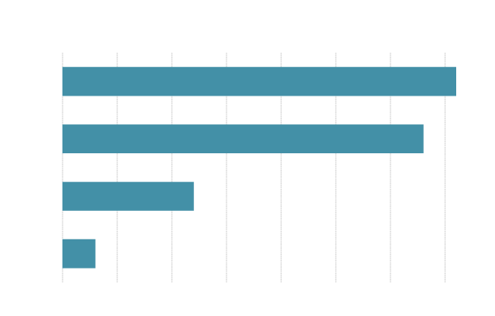
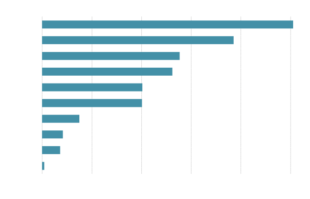
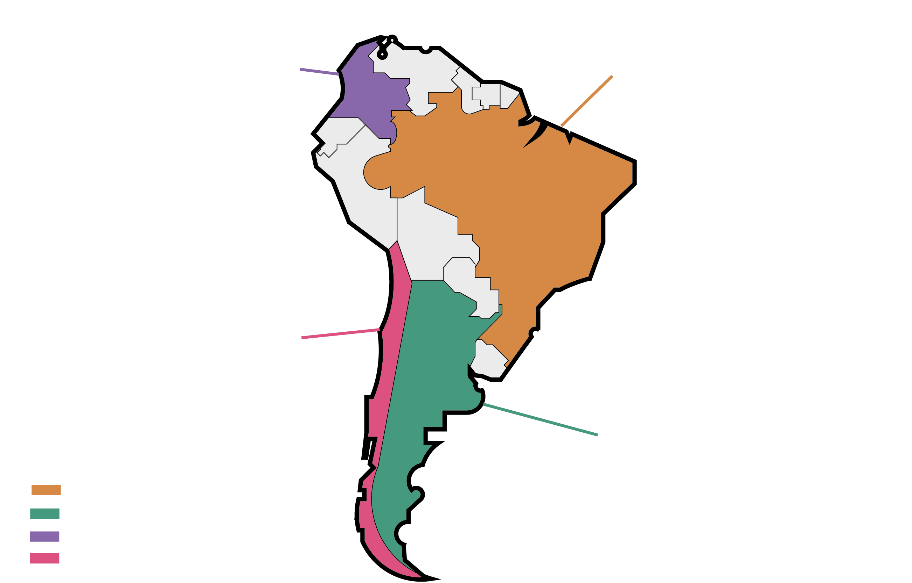
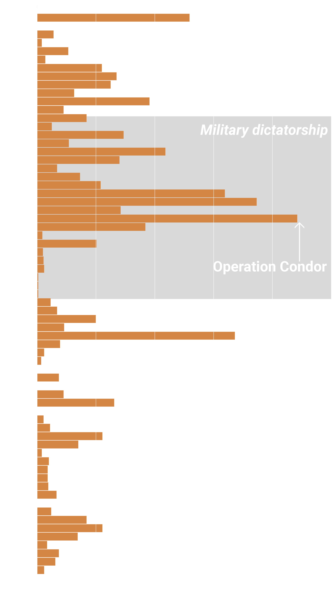
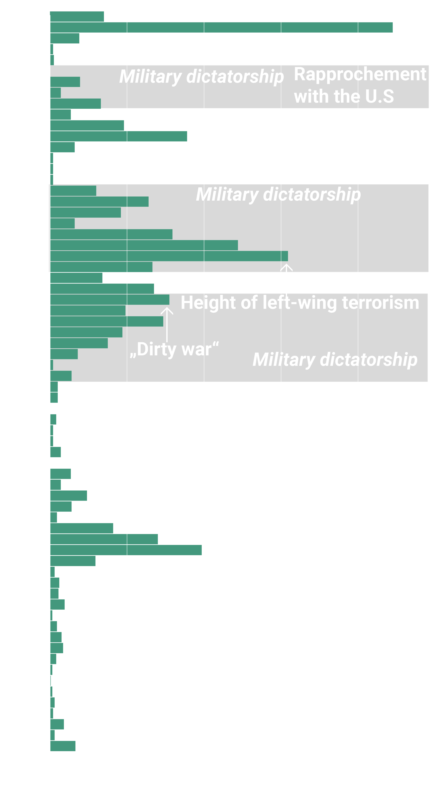
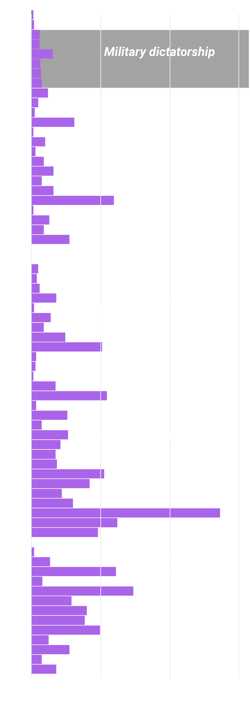
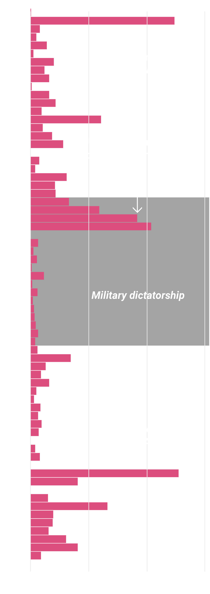

US weapon deals
What the export numbers of US weapons tell us about international struggles and armed conflicts since the 1950s.
BY Benjamin Bitoun
Published for Lede on August 3, 2018
Allies and colluders: Secretary Henry Kissinger (right) meets chilean dictator Augusto Pinochet in Santiago de Chile in 1976.
SOURCE: Archivo General Histórico del Ministerio de Relaciones Exteriores
At a time when the Middle East, North Korea and China dominate the agenda of US foreign-policy, Latin America hasn’t received much attention – other than in the nativist overtones of the current immigration debate and the talk about trade wars. But back in 2013 when then-Secretary of State John Kerry called Latin America the "backyard" of the United States, his wording evoked strong emotions in the region. There was a collective outcry against 200 years of of expansionism and intervention justified by the Monroe Doctrine.
The application of the doctrine meant that Latin America was in fact just that: a backyard of the US. Latin American citizens would de facto live under the control of the United States: According to the historian John Coatsworth, the US brought down 41 Latin American governments between 1898 and 1994. Or they backed anti-communist authoritarian dictators such as Augusto Pinochet in Chile and helped them come to power. Later, in the 1990s, the US actively supported highly contested neoliberal regimes and started to form military-anti-drug related alliances.
In his farewell address to the American people President Eisenhower showed concerns that a "military industrial complex" could lead to a state of perpetual war as the big armament industry will continue to profit from warfare. Was he right? In order to find out and get a better understanding of how much that industry fuled arms races and profited from Latin American armed conflicts alone let’s have a look at the arms export data since the 1950s, gathered by the Stockholm International Peace Research Institute (SIPRI).
No longer a US backyard: Only 4 Latin American countries bought US Arms in 2017
Numbers are in mio. and represent the trend-indicator value (TIV)*.
NOTE: The trend-indicator value (TIV) is based on the production costs of weapons and is intended to represent the transfer of military resources rather than the financial value.
SOURCE: SIPRI Arms Transfers Database
In contrast, five of the ten biggest buyers of US arms were countries in the Middle East. The the top buyer Saudi Arabia bought US weapons worth 37.995 billion TIV - and this only in 2017.
By looking at these export numbers it becomes clear that, after being a sideshow until 1979, the Middle East has become the new US "backyard": a geopolitical hotspot where the US is trying to extert influence on political developments through supporting one regime over the other, through political pressure or through regime changes. The actions taken resemble past US actions in Latin America - so let's have a closer look at that past in Latin America and see if there's a correlation between US weapon export and the regime changes and other historical events in that region. First: How many weapons did the US export since the 1950is and to which Latin American countries?
Brazil and Argentina are by far the biggest buyers of US weapons since 1950
Numbers are in mio. and represent the trend-indicator value (TIV)*.
NOTE: The trend-indicator value (TIV) is based on the production costs of weapons and is intended to represent the transfer of military resources rather than the financial value.
SOURCE: SIPRI Arms Transfers Database
Compared to last years weapon export numbers there are changes. Over the last 67 years it is Brazil that's the top buyer of US arms, followed by Argentina, Colombia and Chile. Let's focus on these four countries and have a closer look at what exactly it was that they bought from the US arms manufacturers.
US Bestsellers in Brazil, Argentina, Chile and Colombia: Aircrafts and tanks
Total number of the major weapon systems sold by the US between 1950 and 2017.
SOURCE: SIPRI Arms Transfers Database
Looking at the totals does offer insight about the balance of power on the continent and about the arms races that were going on between rival states like Brazil and Argentina. But it also gives us an understanding why the SIPRI felt the need to create the trade-indicator value: because one surveillance aircraft doesn't have the military importance of a fighter jet and a tug boat doesn't have the same value as a submarine. Therefore the total numbers don't tell the whole story.
Also, they don't tell us exactly what was going on. In order to link the US weapon exports to the historic events we have to zoom in and have a look at the numbers for the specific year in the specific
Brazil
Chart description velit aliquet.
Argentina
Rapprochement: The US backed President Juan Perón aginst the protectionist Radical Party, negotiated a preferential treatment for US. goods in Argentina.
Chart description velit aliquet.
Chart description velit aliquet.
Operation Condor: The US provided technical support and military for what was a campaign of political repression and state terror in the Southern Cone.
"Dirty War": The military junta got financial and military aid from the U.S in their fight against political opponents and leftist dissidents.
Colombia
Still some work do be done here.
Chile
Still some work do be done here.
NOTE: an optional note or source can go here.
SOURCES: SIPRI Arms Transfers Database
Rapprochement: The US backed President Juan Perón aginst the protectionist Radical Party, negotiated a preferential treatment for US. goods in Argentina.
"Dirty War": Immediately after the Argentine coup the military junta began cracking down on Communist and leftist groups and dissidents. The US. Congress approved aircraft sales worth hundreds of millions of dollars.
For economics-minded readers, Glasner’s study also highlights the relationship of between GDP and percent urbanization in 1960 and 2010: “The US. only became one-third urbanized...
Glasner’s study
Glasner’s study